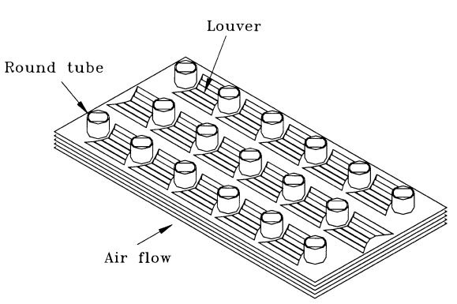
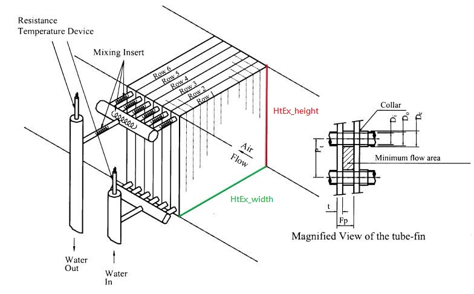
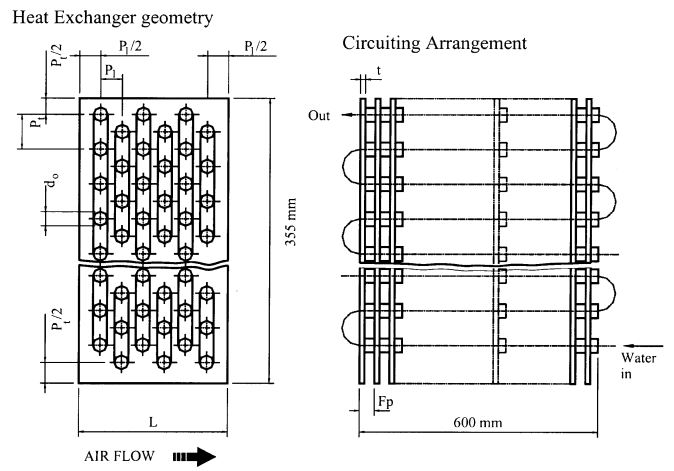
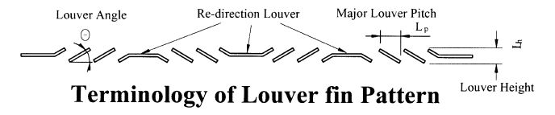

Louver fin with round tube¶
Description¶
The package calculates different features of Louver fin with round tube heat exchanger
Louver fin with a flat tube¶
Figure 1:Typical louver fin geometry with round tube configuration C.-C. Wang
Correlations¶
J Colburn factor¶
The J-factor provides a way to relate heat, mass, and momentum transfer processes. This allows to estimate one transfer coefficient.
F friction factor¶
The friction factor in heat exchanger fins is a dimensionless parameter that quantifies the resistance to fluid flow through the finned passages.
h_air heat transfer coefficient¶
It quantifies the rate of heat transfer between a solid surface (like a fin) and a surrounding fluid.
Pressure drop¶
Reduction in pressure of the fluid as it flows through the heat exchanger due to the resistance to flow caused by the fins.
Fin-and-tube louver surface efficiency¶
Measure of how effectively a louver system can transfer heat between two fluids.
\(m = \sqrt{\frac{2 h_air}{k \delta}}\)
\(\eta = \frac{\tanh(m r \varphi)}{m r \varphi}\)
\(\eta_{overall} = 1 - \left(\frac{A_{fin}}{A_{total}}\right) (1 - \eta)\)
Example¶
For the instance it is necessary to provide these values:
  Fin parameters:
D_c: fin collar outside diameter (m)
delta_f(=t in graph): fin thickness (m)
F_p: fin pitch (m)
k_f: thermal conductivity of fin (W/(m*K))
Louver parameters:
L_h: louver height (m)
L_p: major louver pitch (m)
Tube parameters:
P_l: longitudinal tube pitch (m)
P_t: transverse tube pitch (m)
Air parameters:
density_air: density of air (kg/m^3)
velocity_air: velocity of air (m/s)
viscosity_air: viscosity of air (kg/(m*s))
Cp_air: specific heat at constant pressure of air (W/(kg*K))
Pr_air: Prandtl number of air (dimensionless)
Heat exchanger parameters:
HtEx_height: height of heat exchanger (m)
HtEx_width: width of heat exchanger (m)
N: number of longitudinal tube rows (dimensionless)
Implementation¶
Input¶
Data provided by the user:
from cal import LouverFinRoundTube as cal
def get_data():
return{
'D_c':0.01034,
'delta_f':0.00012,
'F_p':0.0015,
'k_f':204,
'L_h':0.00107,
'L_p':0.002,
'P_l':0.022,
'P_t':0.0254,
'density_air':1.225,
'velocity_air':0.0925,
'viscosity_air':1.887*10**(-5),
'Cp_air':1007,
'Pr_air':0.71,
'HtEx_height':0.355,
'HtEx_width':0.595,
'N':1
}
Call the function¶
def main():
data = get_data()
caldata = cal(**data)
print("Re_DC:", caldata.Re_DC)
print("Fanning friction factor:", caldata.f)
print("Colburn j-factor:", caldata.j)
print("Pressure drop:", caldata.delta_P)
print("Heat transfer coefficient h_o:", caldata.h_air)
print("efficiency:", caldata.eta_o)
Output¶
Results obtained from the calculations:
#Results
Re_DC: 100.05202671182407
Fanning friction factor: 1.6476016678787477
Colburn j-factor: 0.05148511118448749
Pressure drop: 0.9557613545778805
Heat transfer coefficient h_o: 11.894590038782678
efficiency: 0.9655369378815283
Graphs¶
The following graphs show the variation of the friction factor, J Colburn factor, pressure drop, and heat transfer coefficient respect to Reynolds number and other parameters.